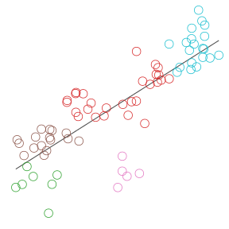
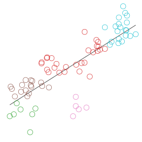
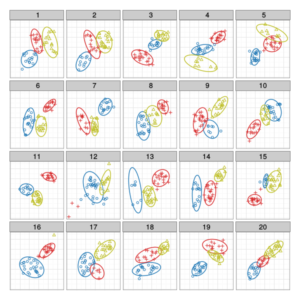

Hierarchy of Visual Features
Susan VanderPlas
March 30, 2015
Outline
Human Perception and Statistical Graphics
Preattentive Feature Detection
Preattentive perception occurs before conscious attention is focused on the stimulus, within the first 200 ms

Perception of Statistical Plots
|
|
Gestalt Laws of Perception
|
"The whole is different from the sum of the parts"
Gestalt Laws
 |
|
Experiment:
How do plot aesthetics affect
perception of statistical plots?
Lineups: "Which plot is the most different?"
 Answer: 9 |
Standard design:
Buja, A., Cook, D., Hofmann, H., Lawrence, M., Lee, E. K., Swayne, D. F., and Wickham, H. (2009). Statistical inference for exploratory data analysis and model diagnostics, Phil. Transac. Majumder, M., Hofmann, H., and Cook, D. (2013). Validation of visual statistical inference, applied to linear models, JASA Wickham, H., Cook, D., Hofmann, H., and Buja, A. (2010). Graphical inference for infovis, TVCG |
Lineups: "Which plot is the most different?"
|
Trend target: 12, Cluster target: 5 |
Modification:
Participant Responses
|
Lineups: "Which plot is the most different?"
|
Trend target: 12, Cluster target: 5 |
Modification:
Participant Responses
|
Data-Generating Models


| Parameters | ||
| $\sigma_T$: Variability in $y$ | $\lambda$: Mixing parameter | $K$: # clusters |
| $\sigma_C$: Variability around cluster centers | ||
Trend Model $M_T$
Input: sample size $N$, $\sigma_T$ standard deviation from the line $y=x$
Output: vectors $x$ and $y$ with $N$ observations
- Generate $\tilde{x}_i$, $i=1, ..., N$, as a seq. of evenly spaced points from $[-1, 1]$.
- Jitter $\tilde{x}_i$ by adding small perturbations
- Generate $y_i$ as a linear function of $x_i$: $y_i = x_i + e_i$, $e_i \sim N(0, \sigma^2_T)$.
- Center and scale $x_i$, $y_i$
Cluster Model $M_C$
Input: sample size $N$, number of clusters $K$, cluster std. dev. $\sigma_C$
Output: vectors $\mathbf{x}$ and $\mathbf{y}$ with $N$ observations
- Generate $K$ cluster centers $(c^x, c^y)$ on a $K\times K$ grid; center and scale
- Sample group sizes $g = (g_1, ..., g_K)$ with $N = \sum_{i=1}^K g_i$
- Jitter points around cluster centers by $ N(\mathbf{0}, \sigma^2_C)$
- Center and scale $x_i$, $y_i$
Cluster Model $M_C$
Null Model $M_0$
Input: sample size $N$, number of clusters $K$, $\sigma_C$, $\sigma_T$, and mixing parameter $\lambda$
Output: vectors $\mathbf{x}$ and $\mathbf{y}$ with $N$ observations
- Generate datasets from $M_C$ and $M_T$
- Select $n_c \sim \text{Binomial}(N, \lambda)$ points from the data generated by $M_C$
- Select $n_T = N - n_c$ points from the data generated by $M_T$
- Center and scale the points in $x$ and $y$
- Assign groups using hierarchical clustering
Null Model $M_0$

Measuring Signal Strength
| Trend | $$\displaystyle R^2 = \frac{SS_{Reg}}{SS_{Tot}}$$ |
| Cluster | For $(x_{ij}, y_{ij})$ the $j$th point in cluster $i$
$$SS_{C} = \sum_{i=1}^K\limits \sum_{j=1}^{N_i}\limits \left(x_{ij} - \overline{x}_{i}\right)^2 + \left(y_{ij} - \overline{y}_{i} \right)^2$$ $$SS_{Tot} = \sum_{i=1}^K\limits \sum_{j=1}^{N_i}\limits \left(x_{ij} - \overline{x}\right)^2 + \left(y_{ij} - \overline{y} \right)^2$$ Define $C^2 := \frac{SS_C}{SS_{Tot}}$ to measure cluster cohesion. |
Parameter Values: Simulation
For all combinations of $\sigma_T\in\{0.2, 0.25, ..., 0.5\}$$\sigma_C\in\{0.1, 0.15, ..., 0.4\}$
$K\in\{3,5\}$
- Generate 1000 datasets consisting of the following sub-plot datasets:
1 from $M_T$, 1 from $M_C$, and 18 from $M_0$ - For each lineup dataset, calculate the following:
- Trend target $R^2$
- Maximum null plot $R^2$
- Cluster target $C^2$
- Maximum null plot $C^2$
Simulation:
$\sigma_T=0.25$, $\sigma_C=0.20$, and $K=3$

Plot Aesthetic Combinations
| Trend Emphasis | ||||
| Strength | 0 | 1 | 2 | |
| Cluster Emphasis |
0 | Plain | Line | Line + Pred. Interval |
| 1 | Color Shape |
Color + Line | ||
| 2 | Color + Shape Color + Ellipse |
Color + Ellipse + Line + Pred. Interval |
||
| 3 | Color + Shape + Ellipse | |||

Shapes conform to guidelines in Robinson (2003) and Lewandowsky & Spence (1989).
Plot Aesthetic Combinations


 


Experimental Structure
Model Parameters
|
Plot Level
|
Plot Aesthetics
|
Evaluation Level
|
Data Collection
- Participants recruited through Amazon Mechanical Turk
- Experiment ran for
23.8hours -
1356individuals completed13519evaluations - Data removed:
- Participants who did not complete 10 trials:
159participants,1060trials - Any trials in excess of 10 for each participant (
421trials)
Final dataset: 12010 trials completed by 1201 participants.
Data Collection
Participants provided:
- Demographic information: age range, gender, education level
- 10 plot evaluations
- Target plot identification (one or more sub-plots)
- Level of confidence in their answer (1 = least, 5=most)
- Reasoning
(i.e. "Strongest linear relationship", "Clustered points", "Odd shape")
Results
Target Identification

Participants selected more cluster targets than line targets, however, 5 plot types were expected to emphasize clustering, and only 2 plot types were expected to emphasize trends.
Modeling Target Selection
| $$\text{logit }Y$$ | $$ = \textbf{X}\beta$$ | $$+ \textbf{J}\gamma$$ | $$ + \textbf{K}\eta + \epsilon$$ |
| where fixed effects $\beta_i$ describe the effect of specific plot types |
|||
| $\gamma_j \overset{iid}{\sim} N\left(0, \sigma^2_{\text{dataset}}\right)$ | |||
| $\eta_k \overset{iid}{\sim} N\left(0, \sigma^2_{\text{participant}}\right)$ | |||
| $\epsilon_{ijk} \overset{iid}{\sim} N\left(0, \sigma^2_e\right)$ | |||
Dataset and participant effects are orthogonal by design
Variability due to model parameters is contained within the random effects for dataset
Modeling Single Target Selection
Target: Trend Plot $M_T$
$Y = \text{Participant selected the plot generated by }M_T$
Plot types are significantly different if they do not share a letter
|
Participants are | Participants are |
Target: Cluster Plot $M_C$
$Y = \text{Participant selected the plot generated by }M_C$Plot types are significantly different if they do not share a letter
|
Participants are | Participants are |
Cluster Target Identification
|

Trend target: 20, Cluster target: 11 |
Participant Responses
|
||||||||||||||
Faceoff: Cluster vs. Trend?
Cluster vs. Trend
Define $C_{ijk}$ to be the event
{Participant $k$ selects the cluster target for dataset $j$ with aesthetic set $i$},
and $T_{ijk}$ to be the analogous selection of the trend target.
Cluster vs. Trend

Plot types are significantly different if they do not share a letter
|
Participants are |
Participants are |
Mixed Signals?
Exploring the gestalt of plots with conflicting aesthetics

|

|

|
Participants are 1.58 times as likely to select the cluster target with color + trend line, relative to the plain plot.
|

|

|

|
Participants are 0.59 times as likely to select the cluster target with color + ellipse + trend line + pred. int., relative to the plain plot.
|
Participant Reasoning
Participant Reasoning
Plain Plots


| Neither Target (N=127) | Cluster Target (N=712) | Trend Target (N=355) |
Participant Reasoning
Trend line


| Neither Target (N=159) | Cluster Target (N=694) | Trend Target (N=333) |
Participant Reasoning
Color Plots


| Neither Target (N=188) | Cluster Target (N=715) | Trend Target (N=292) |
Participant Reasoning
Color + Ellipse Plots


| Neither Target (N=347) | Cluster Target (N=621) | Trend Target (N=222) |
Response Time
Summary: Response Time
- First trials take more time than subsequent trials
- Participants take more time to evaluate plots with more aesthetics
- Participants who identify a single target are faster than those who did not successfully identify a target; Identifying both targets takes the most time
Response Time
$$ \begin{align} \log(\text{Trial Time}) &\sim \textbf{X}\beta + \textbf{J}\gamma + \textbf{K}\eta + \epsilon\\ \text{where } \beta_i & \text{ describe outcome and aesthetic combinations,}\\ & \text{ plus an initial trial effect}\\ \hphantom{where } \gamma_j & \overset{iid}{\sim} N\left(0, \sigma^2_{\text{dataset}}\right)\\ \hphantom{where } \eta_k & \overset{iid}{\sim} N\left(0, \sigma^2_{\text{participant}}\right)\\ \text{and } \epsilon_{ijk} & \overset{iid}{\sim} N\left(0, \sigma^2_e\right) \end{align} $$
Response Time

Participants take more time to evaluate plots with more aesthetics.
Participants who identified a single target plot were faster than participants who could not identify a target plot.
Response Time

Discussion
Conclusions
- Plot aesthetics influence perception of ambiguous data displays
- Aesthetic effects are not additive:
Conflict conditions don't show similar/neutral results - Aesthetics which recruit new gestalt heuristics have more influence, and we can quantify the size of that influence
- Uneven groups in null plots emphasize different features
(but still show the importance of aesthetic/heuristic interactions) - The lineup method allows us to examine why participants switched hypotheses from "Linear relationship" or "Clusters of points" to "Uneven groups"
Similar to a Type III error: the error of giving the right answer to the wrong problem (A.W. Kimball)
Future Work
- Restrict group sizes so null plots have the same objects as target plots
- Explore the effect of different types of common region for error bands and ellipses - shading, bounding boxes, etc.
- Test ellipse and error band aesthetics alone and with trend lines and color to examine interaction effects
- Test plotted statistics (trend line, ellipses, error bands) with and without data points to examine interactions between heuristics from the data and heuristics from summary statistics
Simulation Details
Simulation: Parameter Space

Values of $\sigma_T = .25, .35, .45$ will provide easy, medium, and hard difficulty levels for trend target identification.
Simulation: Parameter Space

Values of $K=3: \sigma_C = \{.25, .3, .35\}$
$K=5: \sigma_C= \{.2, .25, .3\}$ will provide easy, medium, and hard difficulty levels for cluster target identification.